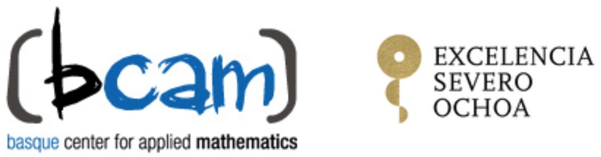
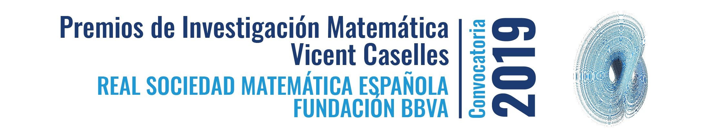

Post-doc position ERC Grant "Analysis of moving incompressible fluid interfaces".
Plazo de presentación de solicitudes: hasta el 15 de enero de 2019.
Día de la defensa: 29 de octubre de 2018.
Doctorando: Diego Armando Rueda Gómez.
Día de la defensa: 31 de octubre de 2018.
Doctoranda: Nadine Kroher.
Día de la defensa: 30 de noviembre de 2018.
Doctorando: Joaquín Barrera López.

We wish to inform you that the call for the doctoral fellowship programme INPhINIT ’la Caixa’ is now open. This programme is devoted to attracting talented Early-Stage Researchers-of any nationality-who wish to pursue doctoral studies in Spanish or Portuguese territory, and it’s sponsored by ’la Caixa’ Foundation. The programme is divided into two different frames:
Fellows enjoy a 3-year contract in a stimulating research training environment, with access to appropriate equipment, facilities and opportunities. Among other elements, these fellowships offer a highly competitive salary and complementary opportunities for training on transferable skills.
As a Severo Ochoa center of excellence, the BCAM offers 5 PhD fellowships in each frame of the programme, on the following topics: Mathematical Physics, Mathematical Modeling, Data Science, Computational Mathematics and Analysis of Partial Differential Equations.
If you wish to apply for one of the positions offered at BCAM, but have doubts about the process, visit our website and don’t hesitate to contact us in

Deadlines: 6 February, 2019 (Incoming) | 27 February, 2019 (Retaining)
El 27 de diciembre de 2018, la presidenta de la SEMA difundió entre todos los socios el anuncio de la convocatoria al Premio ECCOMAS a las dos mejores tesis doctorales defendidas en 2018 en la temática Métodos Computacionales en Ciencias Aplicadas e Ingeniería.
Estimados socios,
Como viene siendo habitual, ECCOMAS convoca el Award for the Best Ph.D. Thesis of 2018 on Computational Methods in Applied Sciences and Engineering.
Quienes hayan leído su tesis doctoral durante 2018 sobre Métodos Computacionales en Ciencias Aplicadas e Ingeniería, y estén interesados en participar en esta convocatoria, deben enviar su solicitud a la Presidenta de SEMA, por correo ordinario o por correo electrónico (las direcciones aparecen al final del mensaje) incluyendo una copia de la tesis y el curriculum vitae. En el caso de que la tesis no esté escrita en inglés, se deberá adjuntar un resumen de 2 o 3 páginas en este idioma. SEMA seleccionará un único candidato, que competirá con los candidatos de otras sociedades miembros de ECCOMAS. SEMA podrá requerir que el/la autor/a de la tesis seleccionada haga una presentación oral durante el próximo ICIAM 2019, que tendrá lugar en Valencia, del 15 al 19 de Julio de 2019.
Fecha límite para la presentación de solicitudes: 21 de enero de 2019.
SEMA seleccionará su candidato antes del 6 de marzo de 2019.
La decisión del jurado de ECCOMAS se hará pública el 29 de abril de 2019.
El premio será otorgado durante la 9th ECCOMAS PhD Olympiad, organizada en el seno de la 5th ECCOMAS Young Investigators Conference (YIC2019), que tendrá lugar del 1 al 6 de Septiembre, 2019 en Cracovia (Polonia).
Prof. Rosa Donat

A continuación, se reproduce el anuncio enviado desde la Fundación BBVA - Premios el pasado 21 de diciembre de 2018.
La Fundación BBVA y la Real Sociedad Matemática Española, RSME, colaboran en la convocatoria y adjudicación de la quinta edición de los Premios de Investigación Matemática Vicent Caselles. Los premios llevan el nombre de quien fue profesor de las universidades de Valencia, Islas Baleares y Pompeu Fabra, en recuerdo de su figura científica y humana.
En esta convocatoria se concederán seis premios, cada uno con una dotación bruta de 2.000 euros, y todos ellos en la modalidad de Investigación Matemática.
Los Premios están dirigidos a investigadores en matemáticas de nacionalidad española, o de otra nacionalidad que hayan realizado su trabajo de investigación en una universidad o centro científico de España, que sean menores de 30 años a 31 de diciembre de 2018 y por tanto hayan nacido en los años 1989 o siguientes (salvo lo dispuesto en el Art. 2 de la convocatoria).
Sin excluir ninguna rama temática que se considere pertinente dentro del rango de la investigación matemática a la que se refieren los premios, se consideran incluidas las siguientes: combinatoria, optimización, estadística, teoría de la información, lógica, teoría de números, álgebra, geometría algebraica, topología, geometría, teoría de representaciones, análisis, sistemas dinámicos, ecuaciones en derivadas parciales, modelización y simulación, computación y aproximación, física matemática, matemáticas de la vida y de la Tierra, matemáticas económicas y sociales.
Toda la documentación necesaria relativa a los premios será enviada a través de la dirección electrónica premios-vicentcaselles@fbbva.es a la Secretaría de la Real Sociedad Matemática Española, hasta las 14:00 horas (hora peninsular) del jueves 28 de febrero de 2019.
Las bases de la convocatoria y el impreso de solicitud están disponibles en la web de la Fundación BBVA.
El pasado 22 de octubre de 2018 la secretaría técnica de la SEMA difundió el siguiente mensaje, enviado por el secretario general de la IMU, profesor Helge Holden.
Dear colleagues,
The IMU is leading the project to declare an International Day of Mathematics (IDM). From your responses to the AO CL 5/2017 https://www.mathunion.org/fileadmin/IMU/Publications/CircularLetters/2015-2016/IMU_AO_CL_5_2017.pdf the IMU decided to move forward to create an annual International Day of Mathematics and to select March 14 ("Pi Day") as the date for the IDM.
UNESCO is the authority to proclaim the International Day of Mathematics. If UNESCO decides to proclaim the IDM, the first celebration of IDM is expected to be on March 14 in 2020.
For more information see also the IMU webpage.
Now the IMU is inviting bids for the logo of the IDM.
Ideally, the logo must be available in different formats for use on the web and for printing on posters. An editable version of the logo will be needed for use in high quality work. If this is not feasible, the IMU is entitled to engage a professional graphic designer for this purpose.
Logos together with artist information (full name, date of birth, career or profession, personal webpage if any, and email) must be sent by email at idm@mathunion.org. Only electronic bids are eligible. An email confirming receipt of submissions will be sent. In case of not receiving a confirmation within 48 hours, please resend the work.
Submissions may include more than one logo. Submissions must include the artist’s statement that, if the logo is chosen by the IMU, the creator of the logo will assign all rights to the logo to the IMU. This includes the permission to make slight modifications. The IMU assures that the name of the winning artist will appear on the IDM website. The competition does not give a monetary award and is open to all individuals worldwide. For submissions not chosen, the rights are retained by the artist.
The deadline for submission of logos to the competition is 31 December 2018. IMU’s decision is expected by April 2019.
The jury for selection of the IDM logo will be nominated by the Executive Committee of the IMU and its decision will be final.
In a separate call, see AO CL 20/2018, organizations are invited to make bids to host the IDM website. Please feel free to circulate this call among potential bidders.
Regards Helge Holden
| Prof. Helge Holden |
| Secretary General of the International Mathematical Union |
| http://www.mathunion.org |
| Phone:+47-92038625 |
Dear colleagues,
The IMU is leading the project to declare an International Day of Mathematics (IDM). From your responses to the AO CL 5/2017 https://www.mathunion.org/fileadmin/IMU/Publications/CircularLetters/2015-2016/IMU_AO_CL_5_2017.pdf the IMU decided to move forward to create an annual International Day of Mathematics and to select March 14 ("Pi Day") as the date for the IDM.
UNESCO is the authority to proclaim the International Day of Mathematics. If UNESCO decides to proclaim the IDM, the first celebration of IDM is expected to be on March 14 in 2020.
For more information see also the IMU webpage.
The IDM will be overseen by an IDM Advisory Board, composed of representatives worldwide and appointed by the IMU. The Board will be responsible for choosing a theme for each year and for overseeing the IDM website.
Now the IMU is inviting bids to host the website of the International Day of Mathematics.
The bid should be drafted according to the guidelines given below.
Please feel free to distribute this call among potential bidders. Only electronic bids are eligible. Please submit your bid to idm@mathunion.org.
Guidelines for preparing a bid to host the IDM website:
The IDM website should contain statements about "what is the IDM", about the date March 14, as well as background/history, founders, Advisory Board.
Each year, all countries will be invited to celebrate the IDM with mathematics activities in schools and with the general public, under a (non-mandatory) theme, which may vary from year to year. Announcements of activities worldwide will be posted on the IDM website. To help the local communities organize activities, Open Source material for curriculum enrichment and activities for the public will be made freely available.
Modern, user-friendly, intuitive design. Robust and clear structure and arrangements, allowing easy handling also by non-experts. Optimized for use on mobile devices and tablets. The design should allow for versions or mirror sites in different languages. Compliance with data protection rules is mandatory. Archiving of content should be done.
Apply a content management system (CMS) that allows various roles of administration, which means different sections of the website can be administered by different persons. This way there is a high level of self-administration that requires, on the other hand, qualified overseeing of the website as a whole.
A renewable contract for a five-year period will be made with the successful bidder.
Deadline for submission of bids: 15 January 2019.
Please submit your bid to idm@mathunion.org.
Título: Análisis teórico y numérico de problemas diferenciales con quimiotaxis repulsiva.
Doctorando: Diego Armando Rueda Gómez.
Directores: Francisco M. Guillén González y María Ángeles Rodríguez Bellido. Departamento de de Ecuaciones Diferenciales y Análisis Numérico e Instituto de Matemáticas-IMUS.
Centro: Universidad de Sevilla.
Defensa: 29 de octubre de 2018.
Calificación: Sobresaliente cum Laude.
This PhD thesis falls within the scopes of Theoretical and Numerical analysis of Partial Differential Equations, with applications to other sciences. Specifically, it addresses the study of some differential problems of repulsive-productive chemotaxis. The first three chapters are devoted to study a chemo-repulsion model with quadratic production, and other two chapters are focused on models with linear and potential (with a superlinear and subquadratic power) production.
In Chapter 1, we present two unconditionally mass-conservative and energy-stable time-discrete numerical schemes for a chemo-repulsion model with quadratic production, and study some additional properties of the schemes such as positivity, solvability, convergence towards weak solutions and error estimates of these schemes.
In Chapter 2, we study an unconditionally mass-conservative and energy-stable fully discrete FE scheme associated to the problem studied in Chapter 1, in which an auxiliary variable is introduced. Again, we study some properties like solvability, convergence towards weak solutions, error estimates, and weak, strong and more regular a priori estimates of the scheme. Additionally, as the scheme is nonlinear, we propose two different linear iterative methods to approach the solutions and we prove solvability and convergence of both methods to the nonlinear scheme.
In Chapter 3, we focus on the study of the asymptotic behaviour of the solutions of the model studied in Chapters 1 and 2. In the first part, we analyze the large-time behavior of the global weak-strong solutions and we prove the exponential convergence to a constant state as time goes to infinity; and in the second part, we study this same behaviour for two fully discrete FE numerical schemes associated to this model.
Finally, in Chapters 4 and 5 we focus on the study of chemo-repulsion models with linear and potential (superlinear and subquadratic) production, respectively. Here, by using a regularization technique, we propose some unconditionally energy-stable and mass-conservative fully discrete FE schemes associated to these models, and we prove some additional properties such as solvability and approximated positivity of the solutions.